Префектура Нара · Нара, квартал Нарамати · прогулки и ремёсла
Нарамати: квартал купцов, призраков и старинного ткацкого дома
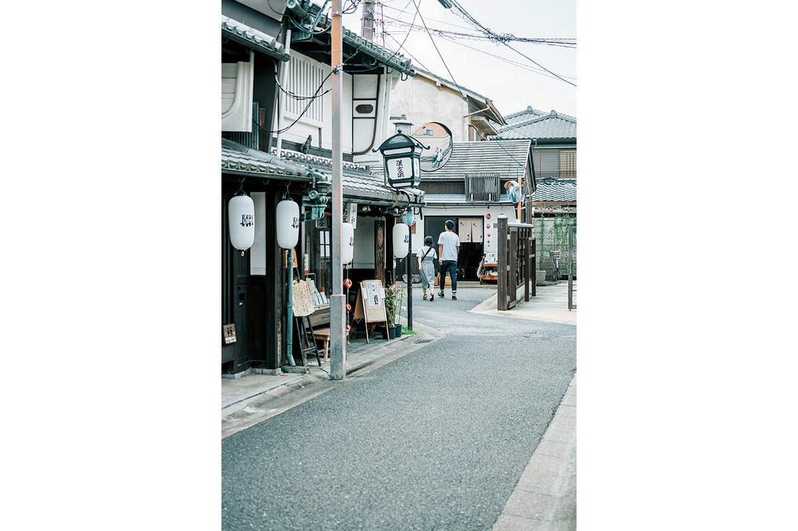
Нарамати любят за кафе, лавки и очереди за колотым льдом, но под карнизами здешних домов висят красные обезьянки, а у пруда стоит святилище, повернувшееся к воде спиной. Гуляем по кварталу легенд, а потом заходим в дом, который построила для него старинная ткацкая фирма Нары.
История
Из храмового города в купеческий
Для многих прогулка по Нарамати становится главной частью поездки в Нару. Здесь смотрят на старые дома, заходят в кафе и лавки с милыми мелочами, а ещё квартал называют столицей какигори, японского колотого льда с сиропом, и очереди за ним давно никого не удивляют.
Название стоит различать. «Нарамати», записанное иероглифами, это город Нара эпохи Эдо (1603–1868): большой район, куда входят и северный квартал Китамати, и южная окраина Кёбатэ. А «нарамати», написанное слоговой азбукой, означает квартал вокруг бывшей территории храма Гангодзи. О нём и пойдёт речь.
Гангодзи внесён в список Всемирного наследия ЮНЕСКО. Его история начинается с Хоко-дзи, первого в Японии большого буддийского храма. Когда в 710 году столицу перенесли в Хэйдзё-кё, на новом месте построили отделение старого храма, и оно стало Гангодзи. Храмовая земля тянулась примерно на 440 метров с севера на юг и на 220 метров с запада на восток. Со временем храм, как и многие другие, пришёл в упадок, а в 1451 году, во время крестьянского восстания, почти все его главные постройки сгорели. На опустевшую землю пришли купеческие дома, и город храмов и святилищ постепенно превратился в город торговцев. Так появилась Нарамати.
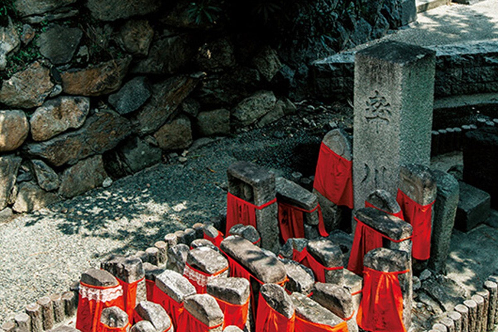
Гуляя по кварталу, то и дело выходишь в узкие переулки. Их называют «дзуси», у многих есть свои имена, например «Хисия-дзуси». Это следы тех улочек, которые прокладывали по пепелищу после восстания 1451 года.
Легенды
Святилище, которое отвернулось
Старым улицам досталось много странных историй. Самая известная связана с прудом Сарусава. Красивая придворная дама унэмэ была любимицей императора, а когда его любовь угасла, в горе бросилась в пруд. Перед этим она повесила своё платье на иву, и эта ива, «Кинукакэ-янаги», до сих пор растёт у юго-восточного края пруда. Горожане пожалели девушку и построили святилище Унэмэ. Но ей не хотелось вечно смотреть на воду, в которой она утонула, и за одну ночь святилище развернулось. Действительно, его фасад смотрит в сторону от пруда.
В Гангодзи, бывшем сердце квартала, живёт легенда о гагодзэ. На западе Японии этим словом обычно называют демона. Сборник буддийских преданий «Нихон рёики» рассказывает, что на колокольне храма появлялся демон, и одолел его мальчик невиданной силы. Демон вырвался, оставив в руках мальчика клок волос, и в ужасе бежал. Лицо мальчика в момент схватки в храме называют «гагодзэ». По территории Гангодзи тут и там спрятаны каменные фигурки демонов, есть и фигурка бога грома: искать их отдельное удовольствие. А переулок, по которому бежал демон, называют «Фусинга-дзуси».
У пруда Сарусава сходятся шесть дорог. Перекрёсток зовут «Рокудо-но цудзи», перекрёсток шести путей. В буддийском учении о перерождениях миров тоже шесть: ад, мир голодных духов, мир животных, мир асуров, мир людей и мир небожителей, и считается, что каждая из шести дорог ведёт в один из них.
Таких историй здесь не счесть. Огромный камень в святилище Досо, которое почитают как покровителя азартных игроков, улыбающиеся каменные львы комаину в святилище Тинтаку-рэйфу, бодхисаттва Дзидзо верхом на коне и в доспехах в сопровождении стражей Фудо и Бисямонтэна: всё это сохранилось и всё можно увидеть своими глазами.
Под карнизами многих домов висят красные тряпичные обезьянки. Это «мигавари-дзару», «обезьянки-заместители», из пришедшего из Китая культа Косин. Считается, что в человеке живут черви санси, которые насылают болезни, а обезьянок злые силы не любят, поэтому их вешают у входа.
Если перед прогулкой узнать эти истории, даже знакомые места выглядят иначе. А может, удастся увидеть и то, чего не видно. Про квартал Ганриин рассказывают, что ночью на пустой улице можно услышать голос за спиной, хотя позади никого нет.
Новое
Shikasarukitsune Building: фирма с 1716 года
Как раз в квартале Ганриин 14 апреля 2021 года открылся Shikasarukitsune Building. Его построила Nakagawa Masashichi Shoten, фирма, основанная в Наре в 1716 году. Это её первый торговый комплекс: трёхэтажное здание на участке около 420 квадратных метров. Внутри флагманский магазин компании, кофейня Sarutahiko Coffee, ресторан сукияки «Кицунэ» и коворкинг JIRIN.
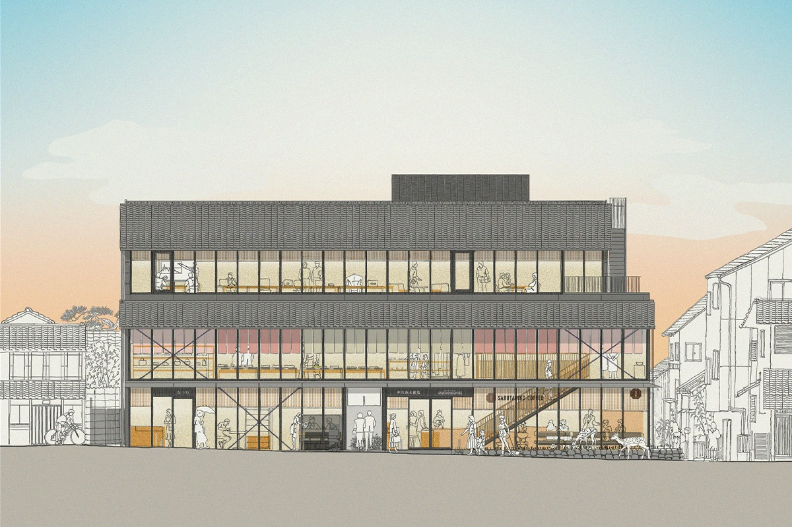
В середине XVIII века фирма начинала как оптовая лавка «нара-сараси», белёной ткани из рами, которой славилась Нара. Позже она стала делать вещи для дома на основе японских ремёсел. В последние годы компания развивала промышленный туризм и решила собрать его в одном месте там, где была основана. Идея комплекса звучит так: пройти по переулкам и встретить Нару, которую можно потрогать, изучить и попробовать. Здесь собраны покупки, еда и мастер-классы, которых нет больше нигде, и для жителей Нары, и для гостей из Японии и других стран.
Архитектура
Дом, который подстроился под улицу
Здание спроектировал Хироси Найто, один из ведущих архитекторов Японии и почётный профессор Токийского университета. Главные приметы: большие стеклянные окна и черепичная крыша в тон соседним домам. В центре устроен внутренний двор, и от него отходит новый переулок, так что дом вписался в пейзаж старой Нарамати.
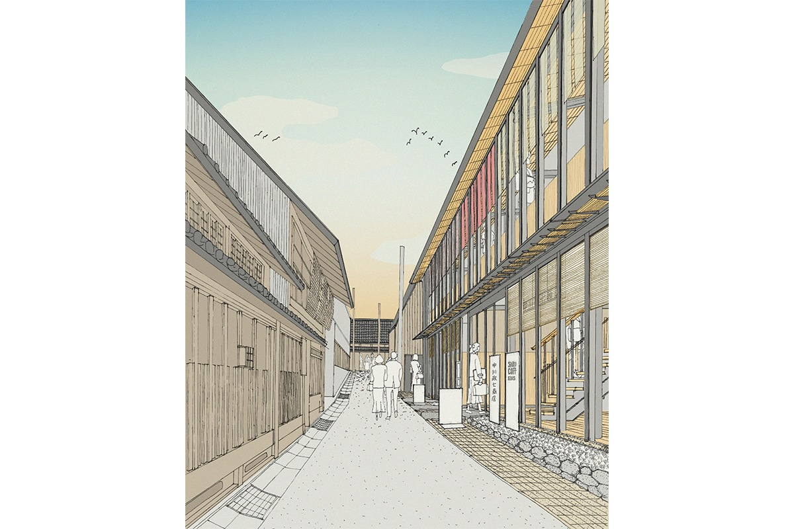
«Сначала я думал о том, как выразить в архитектуре улицу, традицию, настоящее и ближайшее будущее. Крышу мы покрыли черепицей, а навесы над улицей разбили на мелкие части, чтобы фасад не спорил с соседями. Здание трёхэтажное, поэтому каркас стальной, и в нём много современных технологий. Шаг колонн мы взяли 3,6 метра, как в традиционных домах, и колонны получились тонкими, так что и внутри пространство звучит в лад с деревянными домами вокруг»
архитектор Хироси Найто
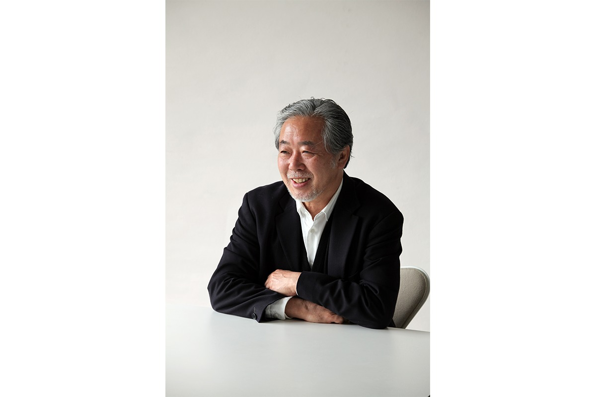
«Черепичная крыша под стать улице и тонкий современный стальной каркас: вот чего мы добивались. Но здание, как и сама улица, лишь фон для жизни: для кафе, магазинов и всего, что здесь происходит. Хочется, чтобы в уголке города с долгой историей появился фон для сегодняшнего дня, в котором чувствуется будущее»
архитектор Хироси Найто
Потрогать
Nakagawa Masashichi Shoten, главный магазин
Флагманский магазин на первом и втором этажах рассказывает, откуда фирма вышла, какой путь прошла и чем жила к 2021 году. Здесь около 3000 вещей, которые компания делает вместе с более чем 800 мастерами и мастерскими. Всё можно взять в руки, а часть товаров продаётся только здесь, их увозят из Нары на память. Весь комплекс задуман так, чтобы показать вкус и ценности, выросшие из самой земли Нары.
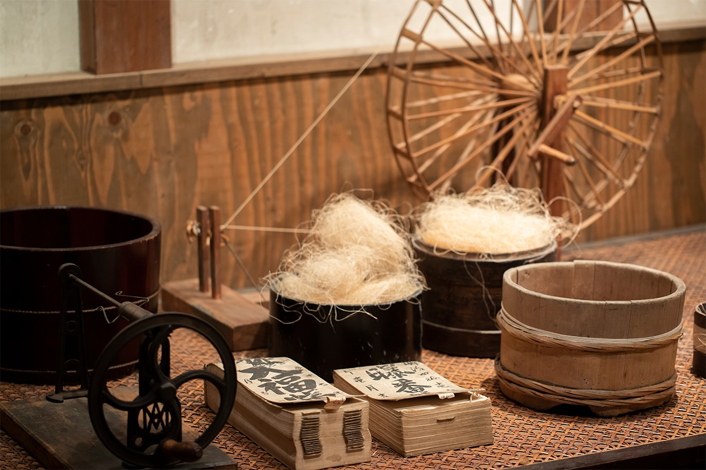
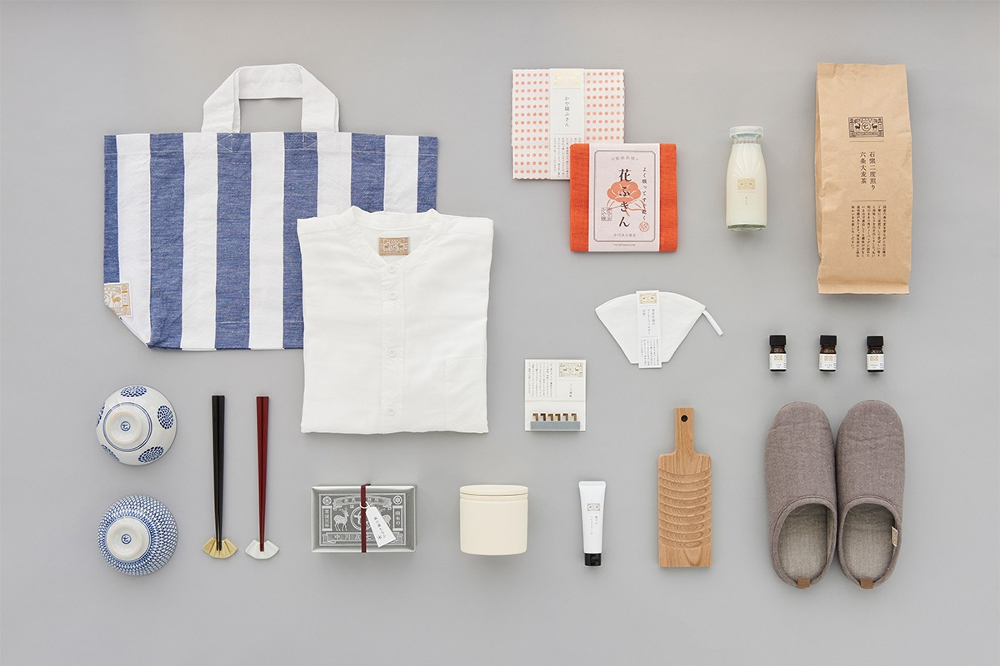
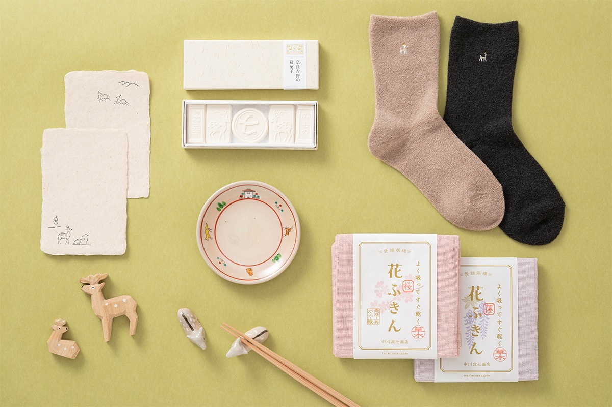
Попробовать
Sarutahiko Coffee и «Кицунэ»
Sarutahiko Coffee появилась в токийском районе Эбису с девизом «кофейня, где одна чашка делает счастливым». Зелёное зерно отбирает сам основатель, а обжаривают и заваривают его со своими знаниями и приёмами. Нарская кофейня стала первой в регионе Кансай. Её зал выходит на улицу большими стеклянными окнами, и чашку пьёшь с видом на старый квартал.
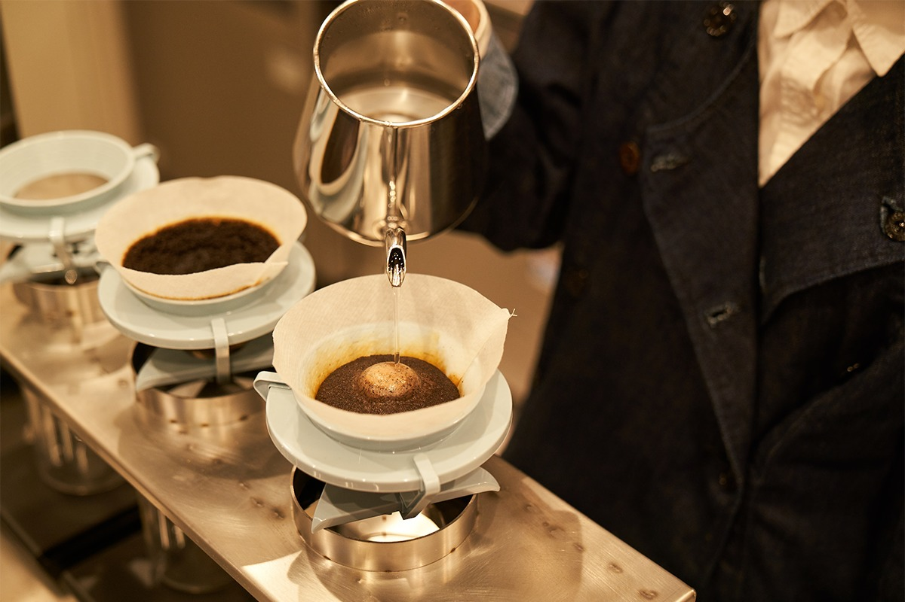
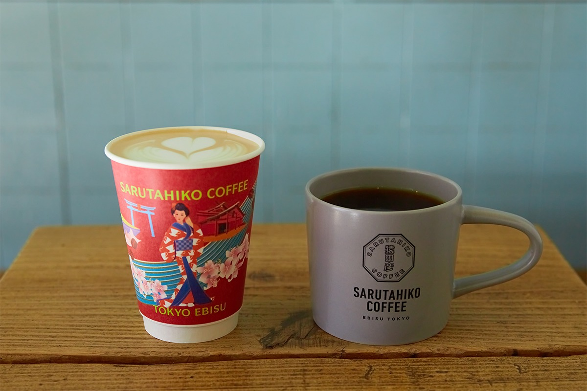
«Кицунэ» открыл токийский ресторан sio из района Ёёги-Уэхара, отмеченный звездой Мишлен. Это его первое заведение, где главное блюдо сукияки, а подают его курсами. Чтобы зайти между прогулками или вместо обеда, здесь продают и бэнто навынос.
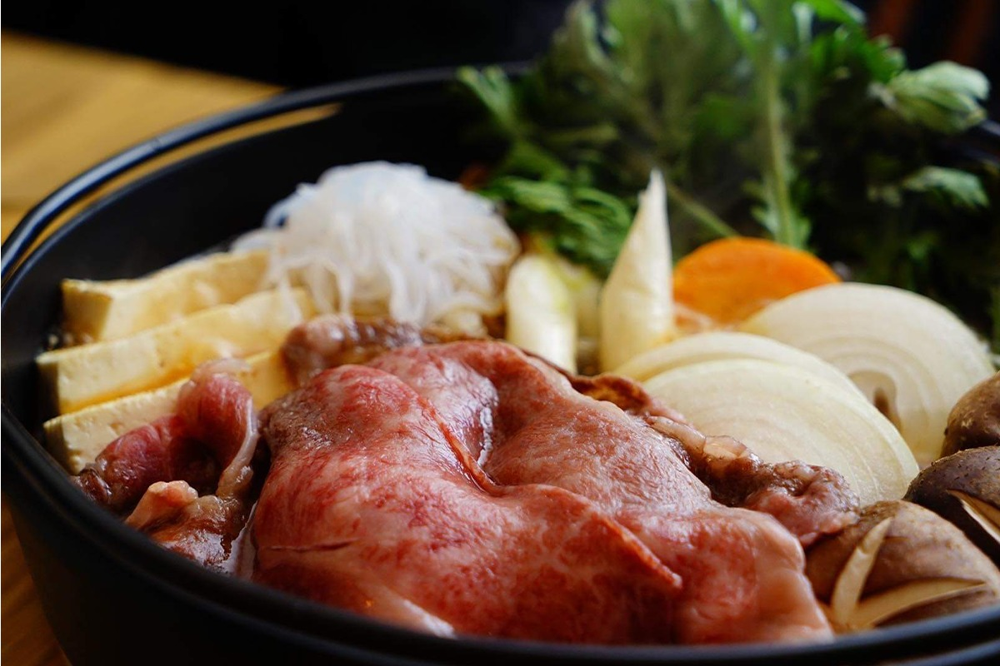
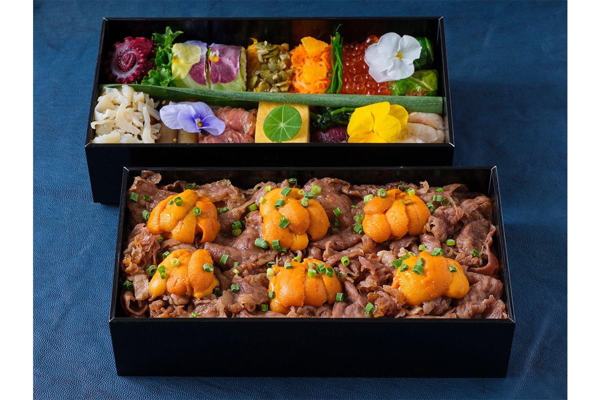
Узнать
Ремесло и коворкинг
Для гостей придумали программы, где можно прикоснуться к ремёслам, истории и культуре Нары. Например, сделать свою открытку, нанеся рисунок по трафарету на ткань из рами, или подержать в руках инструменты, на которых готовят такую ткань, и попробовать ими поработать, чтобы понять, как долог и сложен этот путь.
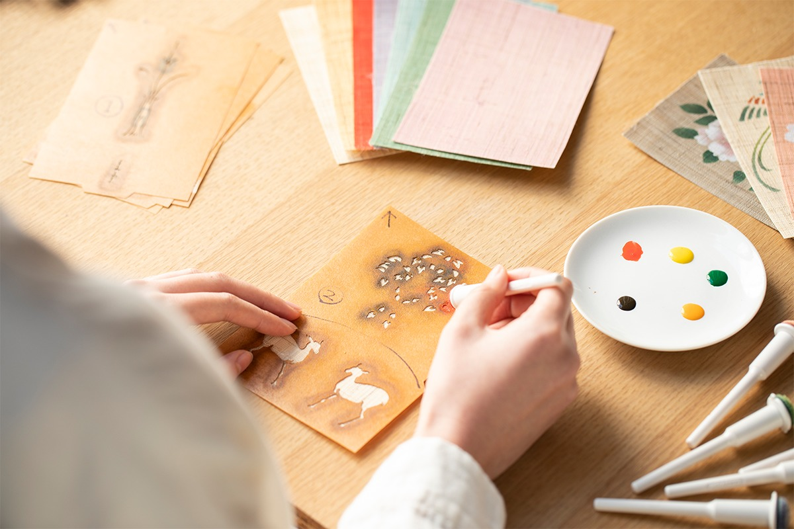
На третьем этаже работает JIRIN, первый коворкинг Nakagawa Masashichi Shoten. Его открыли как базу проекта N.PARK PROJECT, который помогает рождаться в Наре интересному малому бизнесу: здесь вместе работают и учатся. Из широких окон видна пятиярусная пагода храма Кофукудзи, а книги для библиотеки подобрал известный книжный куратор. Компания задумывала здесь курсы по управлению делом и встречи с гостями, чтобы поддержать в Наре творческие начинания.
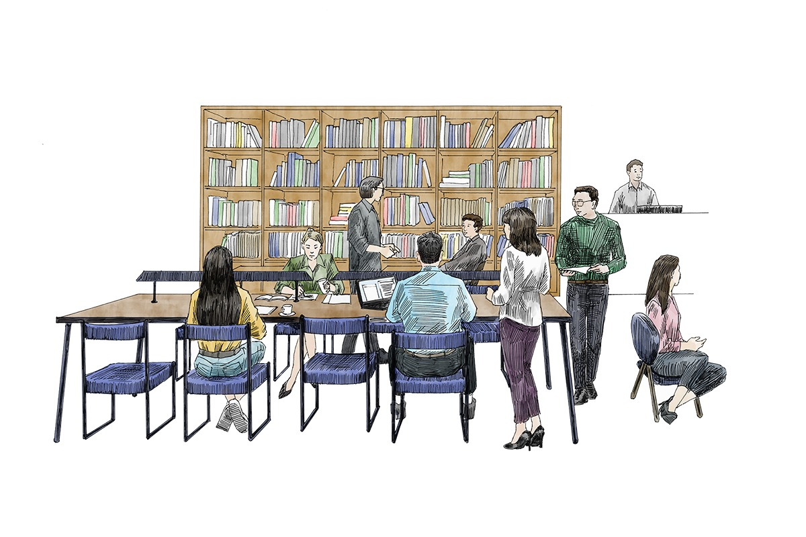
Рядом
Старые дома компании
Вместе с комплексом обновили и соседние постройки фирмы в домах-матия, которым больше ста лет. Первый собственный магазин компании, Yu Nakagawa, открылся в 1985 году. С 2021 года он входит в главный магазин, и здесь по сезонам выкладывают одежду и аксессуары, сделанные японскими красильщиками и ткачами.
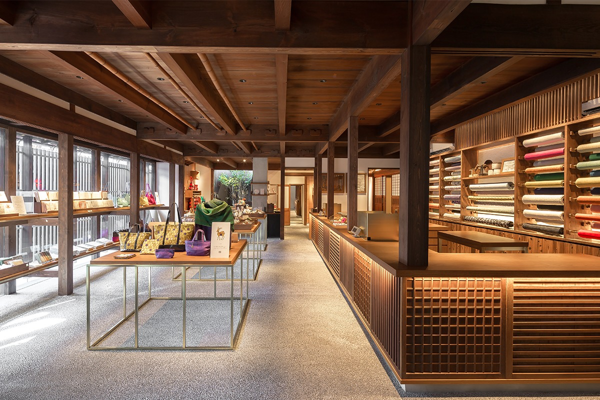
В чайной Saron предлагают по-новому взглянуть на чайную церемонию и научиться ей. Здесь подают сезонные сладости и отборный чай, и между прогулками приятно посидеть в тишине.
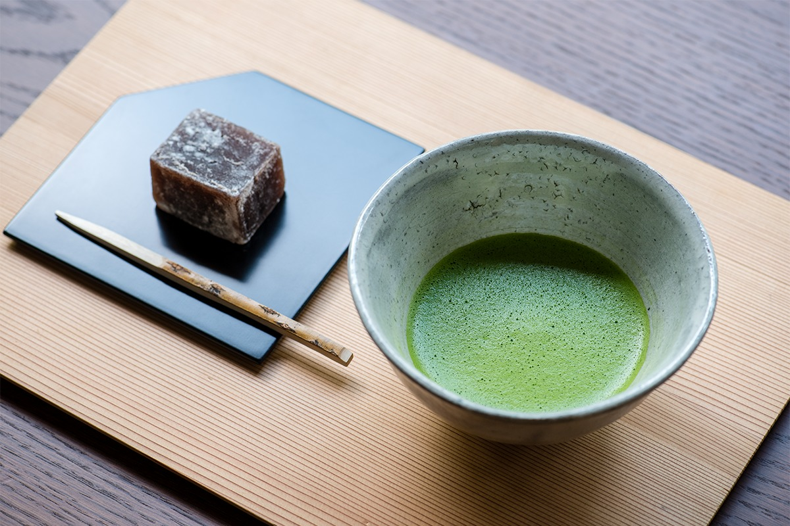
В двух бывших кладовых открыли «Токигуру» и «Нуногуру». В «Токигуре» собран архив трёхсотлетней истории компании, а в «Нуногуре» можно увидеть и потрогать инструменты, на которых прядут и ткут рами вручную.
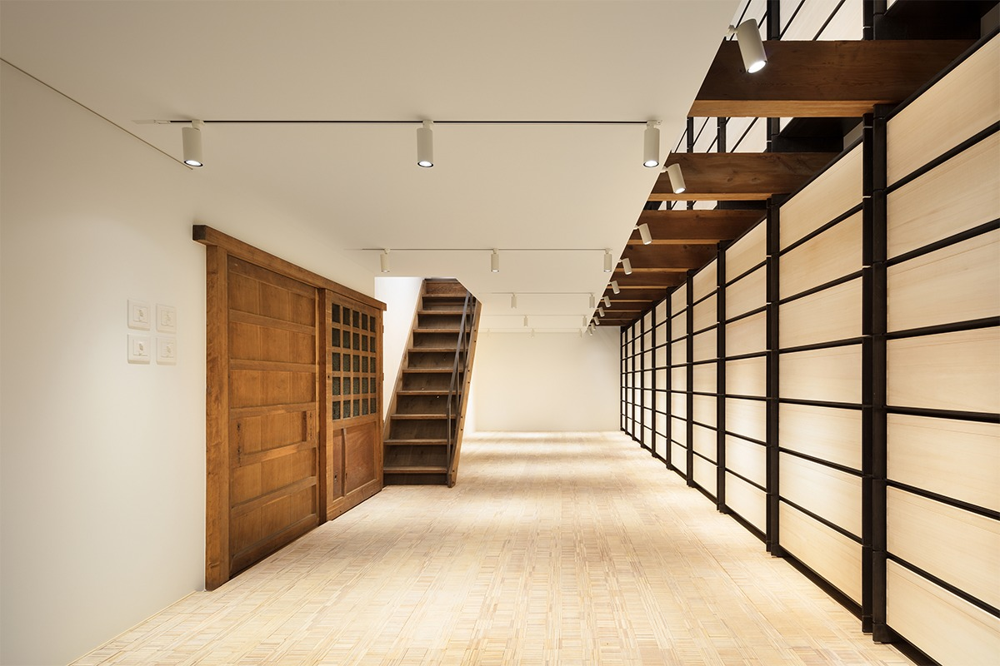
После прогулки по переулкам с демонами и призраками сюда стоит зайти, чтобы увидеть, какой Нара была и какой стала.
Shikasarukitsune Building
- Адрес
- префектура Нара, Нара, Ганриин-тё, 22
- Как добраться
- 7 минут пешком от станции Кинтэцу-Нара
Фото: Юта Того.